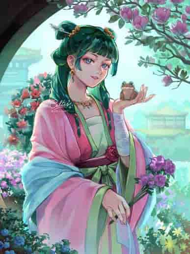

✧ Special Notice ✧


Dear Danny,
This is a formal invitation to watch all of Season 2 of Apothecary Diaries this Sunday @ 8:30am over voice call.
You must clear your schedule promptly. If we are able to start at 8:30am, we can complete all 24 episodes by 5pm! We must be ready to begin a weekly season 3 watch through. In the meantime, please refresh your knowledge of the opening song, linked below: Hana ni natte
From, Daria